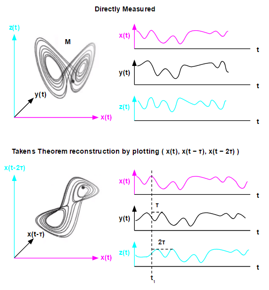

The Feynman Machine is a machine intelligence model derived from intelligence principles of the mammalian neocortex, deep learning architecture, and the Applied Mathematics of interacting Dynamical Systems. This technology is under development by Ogma Intelligent Systems Corp. [1]
The neocortex is a Universal Modeller of Dynamical Systems, in which each region learns to lock onto the dynamics of its inputs, characterise and represent their underlying causal parameters (along with their nonstationarity), and act on them through both feedback and behaviour. [3] hypothesis: the neocortex is a hierarchy-like network of interconnected and coupled regions, each of which is operating as a dynamical system modelling a dynamical system. [3] Our hypothesis is that the structure of a region of neocortex has evolved to use a time series of sensory (and sensorimotor) inputs to generate a dynamical analogue of the system generating the sensory inputs, to forecast its short-term future, to identify stable and slowly-changing characteristics of the system which indicate its hidden controlling parameters or state, to model the nonstationarity of the system state, and to interact with the system using time series of motor outputs. [3]
A Dynamical System is a mathematical model whose dynamics are characterised by express update rules, typically differential equations in continuous systems, or difference equations in discrete time (Strogatz [2014]) [2].
At any given time, a dynamical system has a state given by a set of real numbers (a vector) that can be represented by a point in an appropriate state space (a geometrical manifold). The evolution rule of the dynamical system is a function that describes what future states follow from the current state. Often the function is deterministic; in other words, for a given time interval only one future state follows from the current state; however, some systems are stochastic, in that random events also affect the evolution of the state variables. [4]
With the advent of computers in the mid-20th century, researchers have been able to study the dynamics of nonlinear and complex systems, and since the 1960s this has become a primary focus of Applied Mathematics. [3]
Takens [1981] and others showed that the dynamics of many real-world dynamical systems could be directly and accurately modelled based only on simply observing measurements of the real-world systems over time. This mathematical property allows an agent to characterise an observed system and perform short-range forecasting of its future behaviour, without having access to the underlying causal mechanics or latent parameters of the system. [3] Floris Takens [1981], basing his study on results going back to Whitney [1936], proved that a system such as Lorenz’ could be reconstructed in all important details using only a time-series of a single measurement from the system.
In 1963, Edward Lorenz developed a simplified mathematical model for atmospheric convection using 3 coupled differential equations. It is notable for having chaotic solutions for certain parameter values and initial conditions. [5]
Where:
A Feynman Machine is a collection of Dynamical Systems modules called regions, connected together in a network or hierarchy, and to its external world, via sensorimotor channels, each of which carries a (usually high-dimensional) time series signal of some kind. [2]
Each region is capable of adaptively learning, representing, predicting and interacting with the spatiotemporal, sensorimotor structure of its "world". [2]
[1] link Ogma Intelligent Systems Corp.
[2] link Eric Laukien, Richard Crowder, and Fergal Byrne. Feynman Machine: The Universal Dynamical Systems Computer, 2016.
[3] link Fergal Byrne. Symphony from Synapses: Neocortex as a Universal Dynamical Systems Modeller using Hierarchical Temporal Memory, 2015.
[4] link Dynamical System Wikipedia.
[5] link Lorenz System Wikipedia.
WIP:
https://www.youtube.com/watch?v=6i57udsPKms&ab_channel=FrancisVillatoro
https://discourse.numenta.org/t/1609-03971-feynman-machine-the-universal-dynamical-systems-computer/1398
Page update: 2016-10-09